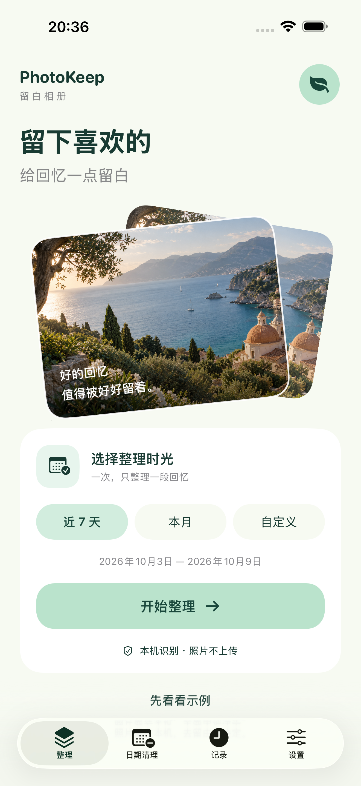
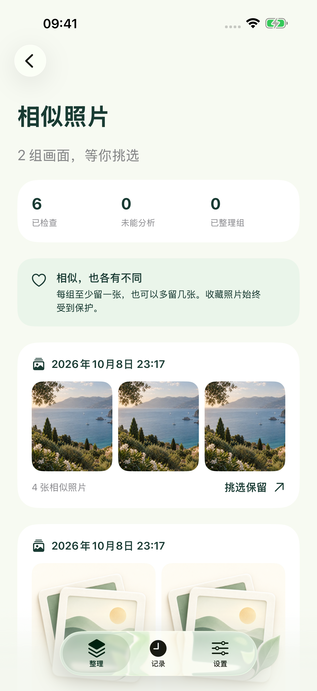
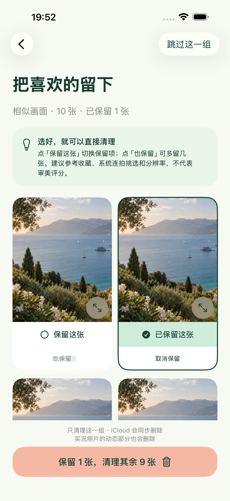
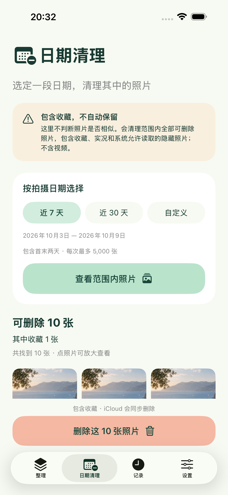

选一段时光
近 7 天、本月，或自己选择起止日期。按拍摄日期查找，每次最多分析 5,000 张照片。
A LITTLE SPACE FOR YOUR MEMORIES
旅行拍了好多张，喜欢的其实就那几张。选一段时光，把相似画面放在一起，慢慢挑出值得留下的。
看看如何整理适用于 iPhone · iOS 17 及以上
首版准备上线 · 免费，无广告、无内购

MAKE ROOM, KEEP THE MOMENT
从上周的散步，到刚结束的旅行。把大相册拆成小任务，让每次取舍都轻一点。
近 7 天、本月，或自己选择起止日期。按拍摄日期查找，每次最多分析 5,000 张照片。
在授权日期范围内完整展示系统连拍，相近时间拍摄的相似画面自动分组。放大看细节，可以保留多张；收藏照片始终受到保护。
默认保留每组建议照片，可换选、多留几张，或直接清理其余照片，再向系统确认。误删后通常可在系统「最近删除」中，于 30 天内恢复。
ANOTHER WAY TO MAKE SPACE
独立的「日期清理」支持近 7 天、近 30 天和自定义日期。先看照片与数量，再确认删除。
此入口包含收藏，不自动保留照片。应用会再次确认日期、总张数及收藏数量，然后由系统确认；相似整理仍然保护收藏。
A CLOSER LOOK
以下为 App 实际运行界面；相册中的照片使用专门准备的示例素材。

相似画面放在一起清楚了解已检查和未能分析的照片。

保留多少，你说了算推荐不是决定，喜欢就多留几张。

按日期全部清理包含收藏，先查看范围和数量，再明确确认。
留白提供主动选择日期、相似画面分组、默认保留、多张保留和直接批量清理流程。它辅助你做选择，不保证识别全部重复或相似照片，也不替代系统的重复项目合并。
不会。只有你确认后才会请求系统删除，也不会自动永久清空「最近删除」。若开启 iCloud 照片，删除会同步影响同一图库的其他设备。
可能没有授权、尚未下载到本机，或不符合相似条件。普通相似候选比较拍摄时间相隔不超过 10 分钟的照片；较长时间间隔的重复照片可能不会归组。照片过多或过于密集时，需要缩小日期范围。
本地照片的识别不需要网络。默认不请求下载云端图像；在设置中开启 iCloud 下载后，Apple 照片服务会按需联网下载，可能产生流量及临时存储。照片不会上传至开发者服务器。
照片通常会先在系统「最近删除」保留 30 天。设备和 iCloud 空间由系统管理，不一定立即变化。留白记录成功删除张数，不把原文件大小当成立即释放的手机空间。
首版准备上线。需要帮助，随时联系我们。
使用帮助与支持 ↗